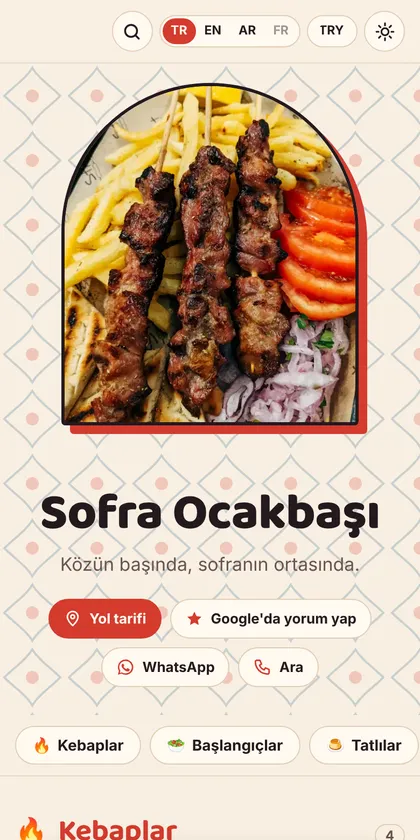

Kalıcı QR kod
Menü değişse bile aynı bağlantı. Yeniden baskı yok.
AuraMenu QR menü, misafirin telefon kamerasıyla okuttuğu an açılır. Uygulama indirmek gerekmez; fiyatları ve ürünleri istediğin an güncellersin, QR kodun aynı kalır.

Menü değişse bile aynı bağlantı. Yeniden baskı yok.
Fiyatı değiştir, ürünü tükendi yap; misafir hemen görür.
Türkçe, İngilizce ve sağdan sola Arapça.
Masadaki QR kodu telefon kamerasıyla okutulur ve menünüz tarayıcıda açılır. Uygulama gerekmez.
Hayır. Menü adresiniz sabittir; içeriği güncellediğinizde aynı QR kod yeni menüyü açar.
Starter aylık 399 TL, Pro aylık 599 TL; tek seferlik plan 2.500 TL (ilk 6 ay barındırma dahil, sonra 6 ayda bir 200 TL).